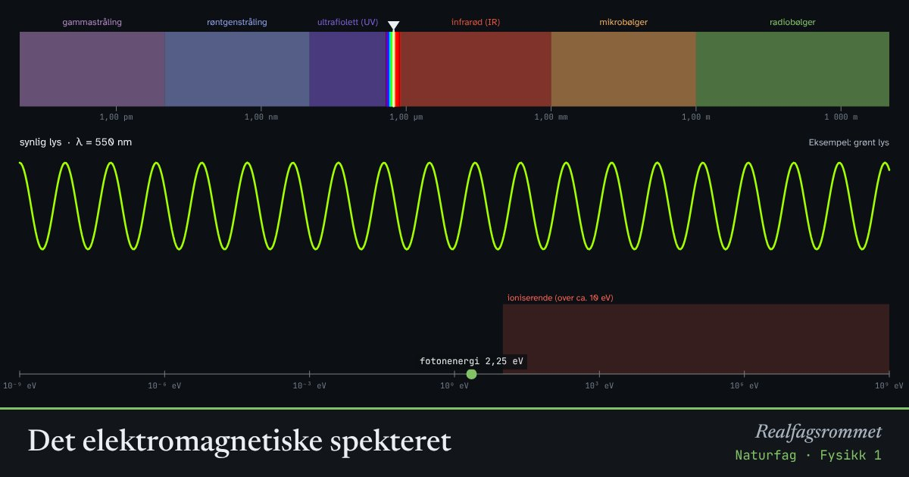

Det elektromagnetiske spekteret
Radiobølger, lys og røntgenstråling er samme type bølger med ulik bølgelengde. Kortere bølgelengde betyr høyere frekvens og mer energi per foton.
Start animasjonen
Formler
Om animasjonen
Alle elektromagnetiske bølger går med lysfarten i vakuum. Bølgelengde og frekvens henger sammen: .
Hvert foton har energien . Fotoner med mer enn omtrent 10 eV kan slå elektroner løs fra atomer. Det kalles ioniserende stråling. Den kan skade DNA.
Synlig lys er bare en liten del av spekteret, fra omtrent 380 nm (fiolett) til 750 nm (rødt).
Mikrobølger og radiobølger er ikke ioniserende. De kan bare varme opp stoffer.
Prøv dette
- Regn ut frekvensen til grønt lys med bølgelengde 550 nm.
- Hvorfor kan UV-stråling gi hudkreft, mens radiobølger ikke kan det?
- Hvilken bølgelengde har mobilnettet på 900 MHz?
- Hvor mange ganger mer energi har et røntgenfoton (0,1 nm) enn et foton av synlig lys (500 nm)?
Kompetansemål
- Naturfag: Trådløs kommunikasjon
- Naturfag: Elektromagnetisk og ioniserende stråling, og helseeffekter
Mer om stråling, atomer og kjerner
- Stråling fra varme legemer
- Stråling og overflate: hvorfor blir svart varmere?
- Drivhuseffekten og jordas strålingsbalanse
- Rutherfords spredningsforsøk
- Bohrs atommodell og linjespektre
- Radioaktivt henfall og halveringstid
- Fusjon, fisjon og stjernenes grunnstoffer
- Stjernenes liv og grunnstoffenes opphav